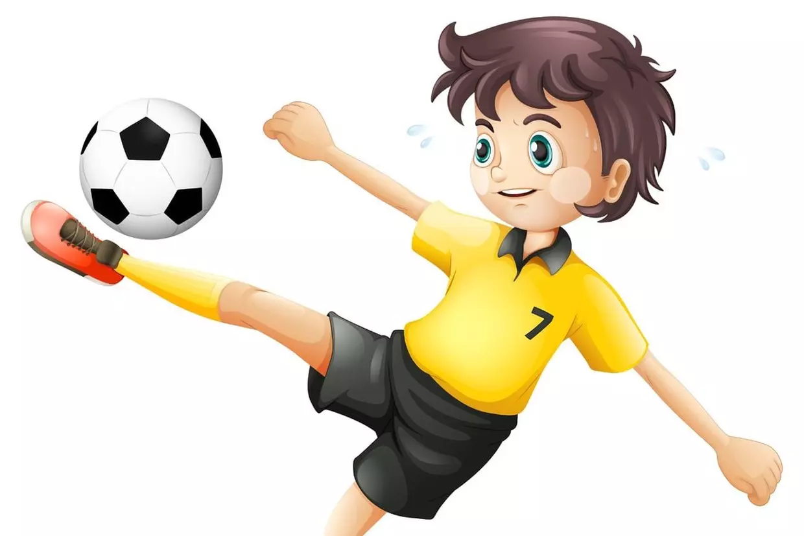
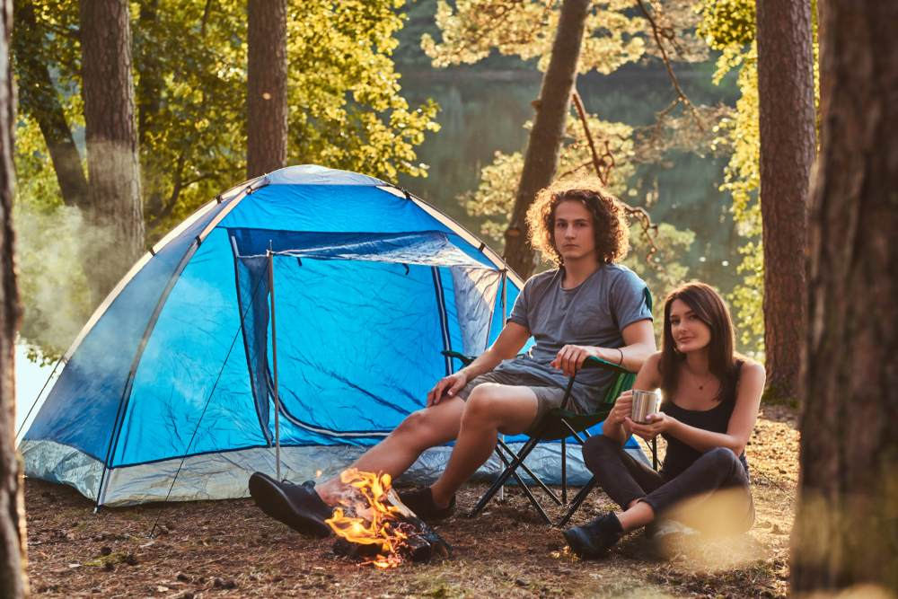
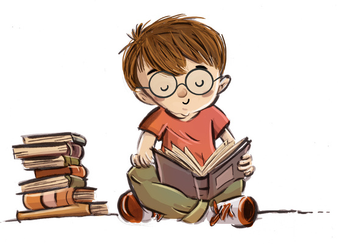
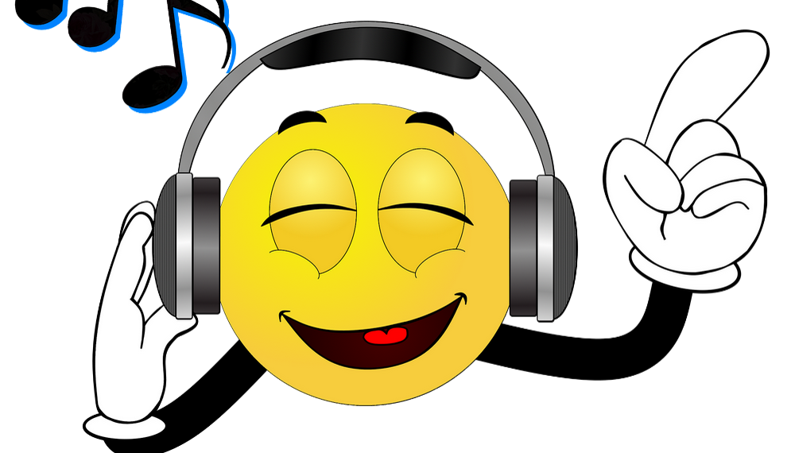

Football
- le football, c'est ma passion, c'est ce que j'aime faire je prends plaisir à jouer
- j'aime regarder les matches du football

Camping
- C'est le lieu de vacances idéales pour se faire des amis à tout âge et partager activités et apéritifs
- Chaque camping a sa propre ambiance, son esprit, que ce soit un petit terrain nature et familial ou un hôtel de plein air moderne et tonique

Lecture
- La lecture permet de s'ouvrir au monde, de comprendre et de communiquer avec ce qui nous entoure
- Elle permet aussi de se divertir, de rêver…

Musique
- Pour moi, la musique est une partie essentielle. Je crois que la musique n'est pas seulement un hobby, mais la bande sonore de nos vies
- Elle serte à nous transporter dans le temps à des moments déterminés, juste en écoutant la mélodie d'une chanson